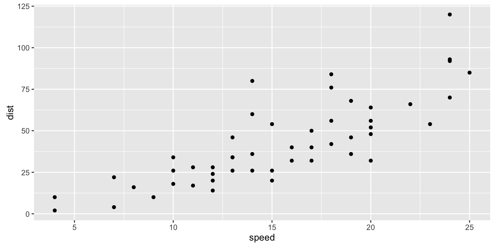

No matter what level of R Programmer you are, you likely struggle to remember every single intricate detail required by ggplot2. It has a steep learning curve compared to base R’s plotting functions, but once you learn to use it, it can produce production level graphics. This post will serve as a quick reference guide to ggplot2. The idea is that it can quickly give an example of the code and output for each type of plot you might need.
I often need scatter plots to show relationships between data. Let’s look at a quick example of the benefits of ggplot vs base R.
plot(cars)
#Create a nice plot using "quick plot"
prettyPlot <- qplot(data=cars, x=speed, y=dist, geom="point")
#Make the plot interactive using ggplotly
ggplotly(prettyPlot, height = 400, width = 600)